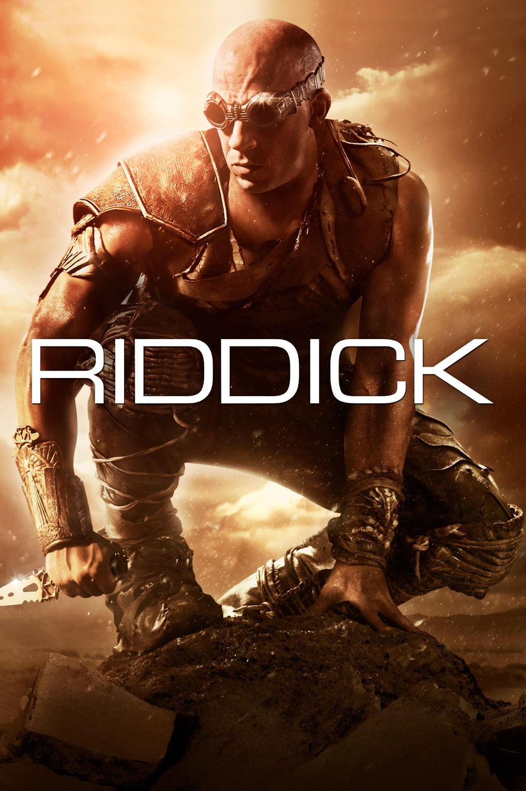

Мировая премьера: 6 сентбяря 2013
Слоган: Лучший способ отомстить – остаться в живых.
Сюжет: Преданный своими и брошенный умирать на пустынной планете, Риддик сражается с хищниками за жизнь и становится сильнее и опаснее себя прежнего. Открывшие на него охоту галактические наемники оказываются пешками в грандиозном плане отмщения. С врагами, возникающими на его пути тогда, когда это нужно самому Риддику, он начинает поход во имя мести, чтобы в конечном счёте вернуться на родную Фурию.
Режиссёр: Дэвид Туи
Серия: Хроники Риддика
В ролях: |
Вин Дизель | Ричард Риддик |
| Хорди Молья | Сантана | |
| Мэтт Нэйбл | Джонс | |
| Кэти Сакхофф | Дал | |
| Дэйв Батиста | Диас | |
| Конрад Пла | Варгас | |
| Букем Вудбайн | Мосс | |
| Рауль Трухильо | Локспер | |
| Нолан Джерард Фанк | Луна | |
| Карл Урбан | Командор Сибериус Вако | |
| Андреас Апергис | Кроун | |
| Ноа Дэнби | Нуньес | |
| Нил Напье | Рубио | |
| Дэнни Бланко Холл | Фалко |
Бюджет: $ 38 млн.
Кассовые сборы в США: $ 42 млн.
Кассовые сборы в мире: $ 98 млн.
Продолжительность: 1 ч. 55 мин.
Рейтинг: 6.4